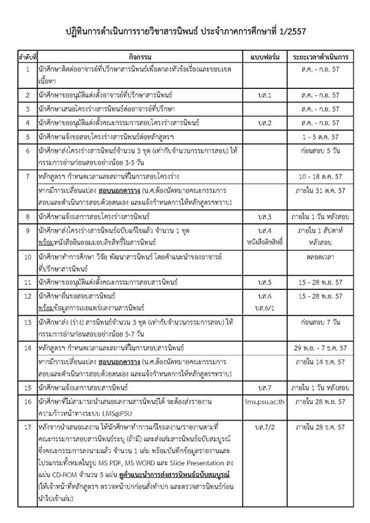

Plan
นักศึกษาที่ลงทะเบียนเรียนรายวิชาสารนิพนธ์ในภาคเรียนที่ 1/2557 อ.ธีรวัฒน์ (ผู้รับผิดชอบรายวิชา) ขอพบนักศึกษาเพื่อแจ้งแนวปฏิบัติการดำเนินการรายวิชาสารนิพนธ์ ในวันเสาร์ที่ 23 สิงหาคม 2557 เวลา 16.15 เป็นต้นไป(ใช้เวลาไม่นาน) ณ ห้องเรียน S203 อาคารวิจัยวิศวกรรมประยุกต์สิรินธรค่ะ พร้อมทั้งขอแจ้งปฏิทินการดำเนินการรายวิชาสารนิพนธ์ตามแนบ